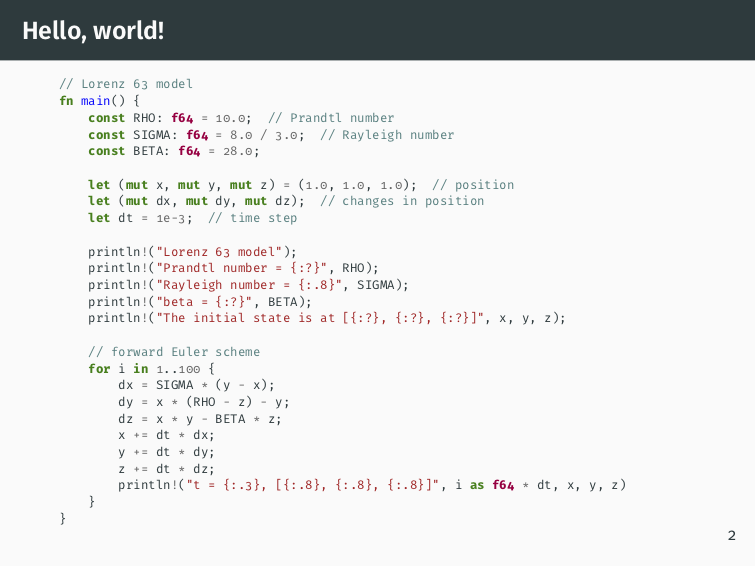

Use minted syntax highlighting in LaTeX with Visual Studio Code LaTeX Workshop
Syntax highlighting in LaTeX is traditionally done with
listings. However, as many pointed out, this
is a defective solution because the listings package does not have a lexer.
Recently, the minted package seems to emerge
as a standard and preferred solution to syntax highlighting in LaTeX. This
package is now part of the TeXLive distribution.
minted requires Pygments as an external lexer and
highlighter. As a result, to use it properly requires enabling --shell-escape
option on LaTeX compilers (latexmk and pdflatex). Otherwise, it cannot find
the pygmentize command. This is a trivial problem if you use LaTeX compilers
as standalone programs under a terminal environment. However, if you use an IDE
to write LaTeX, this can be quite a hassle. I found a way to configure the
VSCode extension LaTeX Workshop so that it can properly compile sources that
use the minted package, from a TeX StackExchange
post.
Add the following to the VSCode user settings:
"latex-workshop.latex.tools": [
{
"name": "latexmk",
"command": "latexmk",
"args": [
"--shell-escape",
"-synctex=1",
"-interaction=nonstopmode",
"-file-line-error",
"-pdf",
"-outdir=%OUTDIR%",
"%DOC%"
]
},
{
"name": "pdflatex",
"command": "pdflatex",
"args": [
"--shell-escape",
"-synctex=1",
"-interaction=nonstopmode",
"-file-line-error",
"%DOC%"
]
},
{
"name": "bibtex",
"command": "bibtex",
"args": [
"%DOCFILE%"
]
}
]
This works for VSCode 1.30.2 and LaTeX-Workshop 5.20.1.
